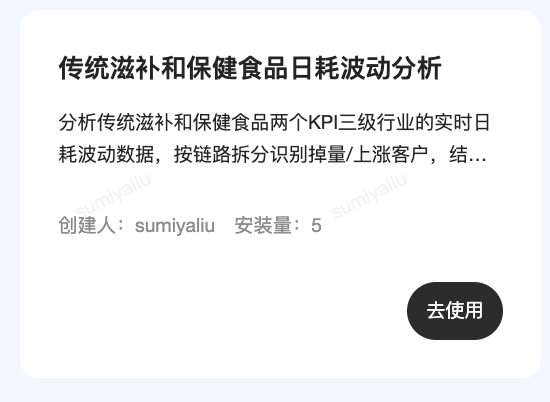
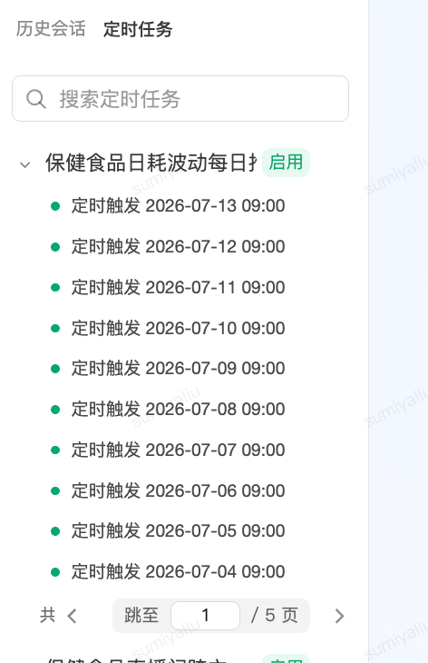
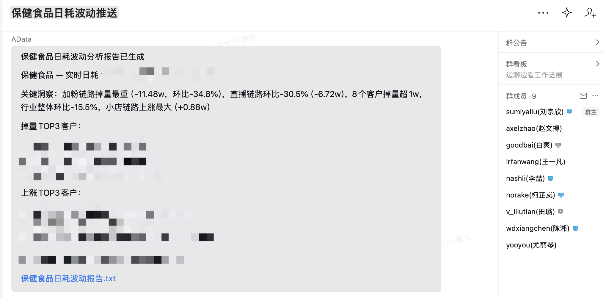
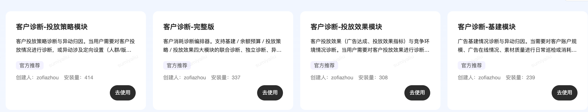
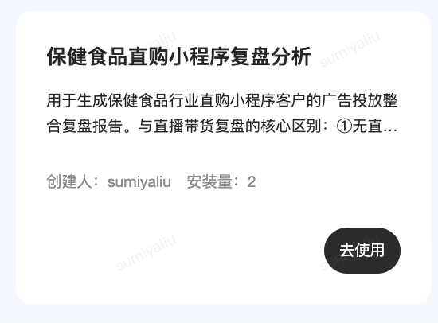
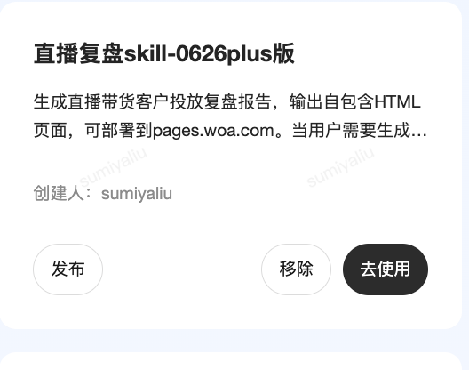

我的【黄金搭档】小 A
在一人看两个行业、连轴转的极致忙碌下，小 A 悄然介入我一天的四大场景，系统盘点她如何陪伴我化繁为简、走向从容。
Tools are levers. Experience is the fulcrum.
“工具是我们的杠杆，经验是我们的支点。”
早晨 9:30 · 还没到公司，异动早已尽在掌握
“通勤路上的一声清脆企微，拉开了温情而高效的一天。”
每天一睁眼或在上班的地铁上，还没踏入公司，小 A 就已经把健康行业的每日实时动态和客户波动拉取整理好，定点推送到企业微信。大盘消耗是涨是跌，大客谁在异动波动，一秒掌握。再也不用早起手动导表、洗数据，把清晨最美好的时光留给自己，元气满满！
小 A 广告提效优势
- • 全自动零人工：无需任何人工登录系统操作，小 A 后台脚本准时拉取。
- • 直达一线企微：打破“数据在电脑，人在通勤”的局限，随时随地掌握大盘。
- • 异动阈值预警：自动进行波动归因，超出阈值重点标记，决策在先。
数据交付内容
自动监控包含：保健食品及传统滋补行业的竞价日耗趋势、头部客户消耗排名跃迁、以及在投直播间的实时转化口径对比。
📸 每日定点推送、当日动态及企微群诊断反馈实战截图 (完全展示)



公司之后 · 一键大规模诊断，秒级高价值交付
“坐镇公司，面对突发的投放问题，告别人工排查的焦躁不堪。”
一到公司，面对多款跑品计划的异动，需要介入大规模深度诊断。原先人工拉取广告后台数据、逐步层层下钻模块、梳理排因、再撰写结论报告，通常要消耗 45–60分钟 甚至到隔天。而现在，有小 A 在手，一键触发“智能诊断智能体”，自动多维度模块分析、智能排序归因，直出高价值图与精辟结论，极速缩短耗时，完美协调问题，交付满意度百分百！
📢 大规模智能诊断的核心优势
分析耗时由 60 分钟压缩至秒级直出。告别逐一拉表下钻繁琐路径，一线运营彻底提效。
AI 驱动各模块下钻深度析因，对影响跑量的大幅变动进行智能排序，结论专业、准确、一针见血。
让扎根一线的你，把时间还给客户；让等待诊断的他，拿到真正有深度价值的直观决策图。

实战诊断报告交付件
本案例沉淀了 “adataclaw 客户诊断 SKILL · 广告诊断 AI 实践”。您可以直接点击下方按钮预览我们的一线真实诊断交付页面。
下飞机开启热点 · 跑上复盘报告，到客户现场直接复盘
“出差拜访大客，最争分夺秒的时刻，莫过于落地到进会议室之前的黄金 1 小时。”
以往下飞机赶往客户公司的路上，需要在车上手忙脚乱地做分析、连内网导数。现在，一下飞机开启手机热点，让小 A 广告助手（ADataClaw）在后台极速跑上“鑫晨枸杞/鑫晨汇选”复盘报告。利用在出租车上的时间，小 A 便已经把大健康传统滋补赛道里两个直播间（鑫晨枸杞小秘坊、鑫晨汇选）近30天消耗对比、人群、素材、智投及基建等复盘指标诊断直出。等你到达客户公司推开会议室大门时，最新最全的专业复盘报告已完备在手，落地即谈，从容搞定客户！
鑫晨跑品直播带货复盘明细
该复盘涵盖大客近 30 天在各个在投直播间的实战表现（消耗趋势、曝光点击转化率、加粉直购等链路表现、以及基建健康度诊断等），帮助客户定位主要转化卡点。
鑫晨枸杞/汇选复盘报告
您可以直接点击下方按钮预览我们在热点连接下，由小 A 瞬间产出的高级 ECharts 复盘交付大屏：
📸 出差热点极速复盘与复盘 Skill 截图 (完全展示)


第二天开周会 · 双赛道数据一键全览，多维维度与结构整合
“周会前再也不用提心吊胆，双赛道、多维度双周报结构秒级整合！”
出差回来的第二天周会。作为运营负责人，需要对【保健食品】与【传统滋补】两大板块的双周会数据做一个多维整合。现在利用小 A 的时间线整合工作流，实现品类趋势纵向细分、品类×链路交叉热力图决策结构、以及客户生命周期的层级跃迁模型一屏掌握！摆脱了过去繁琐的 PPT 堆砌，在周会上用严谨、科学的分析结构和方法论维度大放异彩，汇报思路清晰得体，展现极效甜蜜流！
双周会整合大盘 · HTML 实时大屏直达
💡 双周大盘报告已自动根据“保健食品直播链路深度分析报告”和“传统滋补”两项指标深度融合。